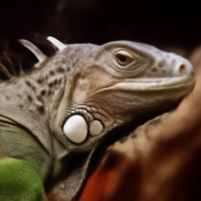
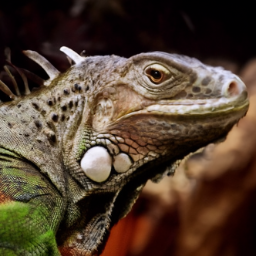

Beyond MMSE: Enhancing PnP Restoration with ProxiMAP
Advances in Neural Information Processing Systems (NeurIPS), 2026
@inproceedings{vert2026proximap,
title = {Beyond {MMSE}: Enhancing {PnP} Restoration with {ProxiMAP}},
author = {Vert, Kenta and Meanti, Giacomo and Pesme, Scott and Arbel, Michael and Mairal, Julien},
booktitle = {Advances in Neural Information Processing Systems (NeurIPS)},
year = {2026},
note = {arXiv:2605.16396}
}